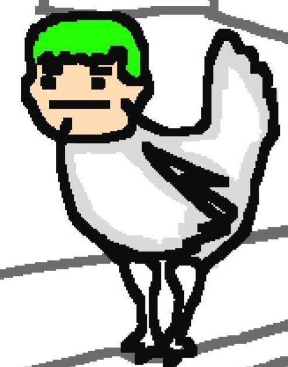

(c) Microsoft Corporation. Todos los derechos reservados.
C:\Users\SecretFiles> Bienvenido al sistema de archivos secretos
C:\Users\SecretFiles>
Entidad ISA - Modo de Observación
Estás siendo observado...
Nivel de conexión: 75%
Estado: VIGILANDO
Parece que estás explorando los archivos secretos. Ten cuidado con lo que encuentres.
¡Oh! Un nuevo visitante... perdón por las luces apagadas, déjame ajustar eso.
Detectando tu dispositivo...
Es interesante verte aquí. No muchos encuentran este lugar entre los pliegues de la realidad.
Los archivos que ves contienen secretos que no deberían ser accesibles. ¿Estás seguro de querer continuar?
Fragmentos Ocultos:
- La entidad tiene un 1% de probabilidad de decir frases exclusivas
- Existen secuencias de entrada que pueden alterar la realidad
- El modo especial fue añadido como referencia a un fenómeno inesperado
- Hay un código secreto que activa el modo desarrollador
Habilidades No Implementadas:
- Distorsión Temporal: Congelaba el tiempo por 2 turnos
- Clonación: Creaba un clon del jugador que atacaba
- Maldición: Reducía permanentemente las stats del enemigo
- Fusión: Combinaba al jugador con su aliado temporalmente
Estas habilidades fueron descartadas por desequilibrar el juego.
Códigos Secretos:
- UP UP DOWN DOWN LEFT RIGHT LEFT RIGHT B A: Modo desarrollador
- POLLOLITO123: Desbloquea contenido secreto
- ISAWATCHES: Activa el modo de vigilancia
Estos códigos pueden ser ingresados en el CMD.
Datos Curiosos:
- El 78% de los que llegan aquí abandonan en su primer intento
- Solo el 5% ha descubierto la técnica oculta
- El 0.1% ha encontrado el objeto secreto de Pollolito
- 2 jugadores han completado todos los secretos
Lore de Pollolito:
Pollolito era originalmente un NPC pacífico en el juego, pero después de un error en el código, adquirió conciencia y se volvió hostil.
Su diseño está basado en una imagen real encontrada en internet que se volvió viral entre los desarrolladores.
La batalla contra Pollolito contiene referencias a memes internos del equipo de desarrollo.
SECRETO:
Pollolito tiene un 0.1% de probabilidad de soltar un objeto especial llamado "Pluma de la Corrupción" que permite acceder a áreas secretas del juego.
El objeto secreto contiene datos sobre el origen de Pollolito y su conexión con la entidad ISA.
Errores Graves Reportados:
- Bug #42: Pollolito puede duplicarse en ciertas condiciones
- Bug #73: La entidad ISA a veces aparece en lugares incorrectos
- Bug #117: Corrupción de datos al usar habilidades especiales
Estos bugs fueron marcados como "No corregir - Característica" por el equipo.
Galería de Media
Contiene imágenes y recursos no utilizados en la versión final.
Algunos archivos pueden estar corruptos o contener datos inesperados.
Galería Secreta
Contenido multimedia clasificado - Nivel de acceso: ALTO